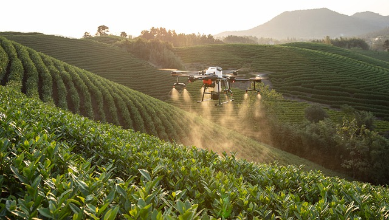
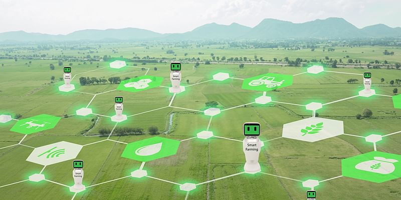
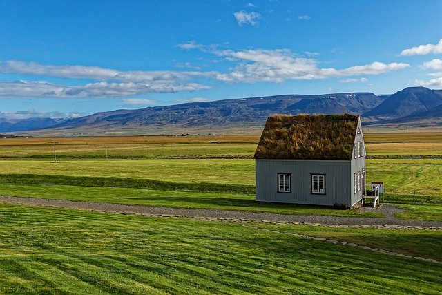

Farming has evolved through phases like subsistence farming (1700s), large for-profit farms (barns: 1800s),
animal-powered farming (horses: early 1900s) and machine farming (late 1900s). We are now entering the era of
data-powered farming, via large-scale open data sets on weather and yields, Internet of Things (IoT), drones and
smart tractors. In future, digital tools will be as important as traditional farming tools in the agricultural sector,
according to Rob Thomas, author of ‘Big Data Revolution.’
The deployment of IoT in the rural sector blends together a range of fields – farming, telecommunications, digital
instrumentation and industrialised production systems. Powered by advances in computing, other adjacent fields such as
Artificial Intelligence (AI), animal healthcare and energy also enter the fray, .

IoT in agriculture
IoT has been deployed across a broad array of settings such as healthcare (post-operative care, disease monitoring),
smart factories (predictive maintenance, defect detection), and retail (asset tracking, shopping insights).
Numerous applications also arise in agriculture (cold storage facilities, pump control, crop, and animal monitoring).
Several researchers have already addressed how mobile phone communications are impacting agricultural communities. IoT will further
extend and amplify this impact. For example, prepaid subscriptions are a common payment option, and sharing of mobile phones between
several users is not unusual. Mobile phones are used for sharing social and business information, micro-co-ordination of activities,
market expansion, and planning of livestock operations. Industry bodies and government agencies are working together to make mobile
phones more affordable, and network coverage more extensive for farming communities.
IoT and remote sensing have helped unearth new innovations. For example, GroundCover uses farm imagery to map and predict potato yields;
its CanopyCheck app adds geo-location information for farmers using smartphones. Monsanto’s Integrated Farming System (IFS) uses
science-based analytics tools such as FieldScript for advice on planting, precision seeding and genetic gain. GrowSafe Systems uses
sensors and analytics to track the movement and health of cattle and help farmers deal with disease detection and prevention.
IoT also plays out well within India’s startup ecosystem, now the third largest tech startup ecosystem in the world, and IoT presents
opportunities for players across the value chain. Startups comprise a majority (60–65 percent) of the Indian IoT ecosystem, and 70
percent of these startups are less than six years old. They are targeting the consumer as well as agricultural and industrial sectors.
Impact areas
IoT, along with big data analytics, can also help reduce the chronic energy shortage in rural farming areas. Machine data will be
critical in the renewable energy sector, for instance to monitor massive wind turbine installations which are often in remote areas.
Aeryon Labs uses drones to inspect and manage energy sites like turbines and rigs.
In the summer of 2012, northern India experienced one of the largest power outages in history. But the application of IoT sensors,
data and pattern analysis could have foreseen the risk and prevented such a blackout. Expenditure on Big Data analytics by global
utility companies could reach $3.8 billion in 2020, according to GTM Research. Smart meters and smart grids could also help ‘nudge’
consumers towards better energy utilisation in farming as well as industrialised communities.
IoT in agriculture can unleash a range of benefits. It can increase the productivity of agricultural workers by automating processes
such as switching on remote farming equipment, which also reduces travel costs. More responsive healthcare services can also be
provided for livestock, and their health indicators can be tracked via wireless sensors.

Enter the digital twins
Digital twins offer useful capabilities here for better utilising farming machinery. A digital twin is a continuously-learning
replica of a physical system. The digital twin has been identified by Gartner as one of the Top Five tech trends of 2017. Through
continuous learning, such digital models can offer deep insights on each physical asset to monitor agricultural machine performance
and reduce downtimes.
Rural areas can also become sources of local and urban energy, via smart solar/wind farms. States like Karnataka, where wind energy
is a major initiative, can use AI and IoT to optimise arrangement of wind farms and directional positioning of individual windmills
as well as turbine blades across different conditions of wind speeds and wakes. Already, state capital Bengaluru is home to 51
percent of all IoT startups in India, according to the IoT Startp Directory 2017. And encouragingly, agritech companies accounted
for 12 percent of all IoT startups in India.
Despite the challenges, there are a number of companies working towards deploying IoT in agriculture in India. SatSure, for instance,
uses IoT and big data to provide financial security to farmers, Gramophone uses technology to address information asymmetry.
Avanijal’s app irrigates fields while helping farmers save water and sleep! Green Robot is building smart farm machinery using 3D
vision technology and robotics. Avanijal and Green Robot are both finalists of Qualcomm’s Design in India Program, which began in
2015, and encourages Indian product companies to create innovative hardware product designs that incorporate Qualcomm technologies
and platforms.

IOT PROJECTS IN RARAL DEVELOPMENT-